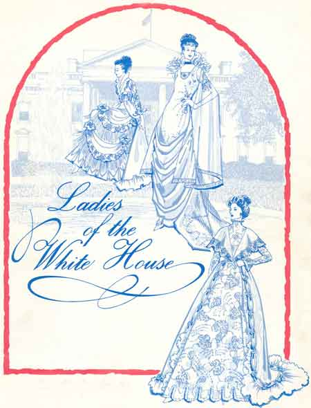
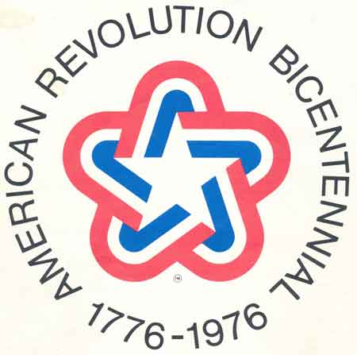

  |
When news of the observance of American’s bicentennial first came from Washington, Mrs. Anthony Frasca proposed the project of reproducing the gowns to Mayor William A. Thorp as a part of the city’s observance. Reproducing the gowns had been a life-long dream of Mrs. Frasca. With the pageant in mind, she returned to the Smithsonian in Washington and discovered the first 15 or 20 first ladies gowns could no longer be displayed, at least in bright light, because of the deterioration and fading of the colors. Mrs. Erna Kautz, professional costumer, worked with Mrs. Frasca and the Smithsonian curator making sketches of patterns from which to create a majority of the dresses. Their notes helped insure the gowns would be as authentic as possible. Niles seamstresses made some of the gowns. Anne Townley, past president of the Niles Historical Society, made 4 of the gowns, as well as modeled one of them. Material used for the original gowns was of course not available, but they matched the material as closely as possible with what is available today. Many of the gowns required tedious pearl and crystal beading and appliquéing of lace on yards and yards of material. There were 39 gowns in the original show, but as years went on, four more presidents’ wives gowns were duplicated and joined the show. Local women modeled all the gowns and they studied the characteristics of the first lady they represented. The hairstyles were copied from the period and the accessories were chosen to be as close to the original as possible. Sponsors and donations helped to defray the cost of the project. In 1976 the gowns were valued between $500.00 to $2,000.00. Months of work went into the making of the gowns, which are a sauthentic recreations of the originals as possible, revealing 200 years of elegant fashion. The project was the only one of its kind in the nation during the bicentennial year. Those lucky enough to see one of the shows found it to be an outstanding event. It was an enormous project and quite an accomplishment, certainly a labor of love by many people. As time has passed (in the 40+ years since), some of the dresses have been misplaced. The Niles Historical Society has undertaken the project of tracking down the dresses and giving them a permanent home in the museum. To date, 38 gowns have been given to the museum, allowing visitors to the museum to once again enjoy viewing them. The display of gowns will change from time to time, but we are delighted to have an opportunity to preserve this special part of Niles history. |
|
| |
||
President James
Madison Dolley Madison |
President James Monroe |
|
| John
Quincy Adams |
Andrew
Jackson |
Martin
Van Buren |
| William
Henry Harrison |
John
Tyler |
James
K. Polk |
Zachary Taylor |
Millard Fillmore |
Franklin Pierce |
James Buchanan |
Abraham Lincoln |
Andrew Johnson |
| Ulysses S. Grant |
Rutherford B. Hayes |
James A. Garfield |
Chester A. Arthur |
Grover Cleveland |
Benjamin Harrison |
| Grover Cleveland |
William McKinley |
Theodore Roosevelt |
William Howard
Taft |
Woodrow Wilson |
Warren G. Harding |
| Calvin Cooledge |
Herbert Hoover |
Franklin D. Roosevelt |
Harry S. Truman |
Dwight D. Eisenhower |
John F. Kennedy |
Lyndon B. Johnson |
Richard M. Nixon |
Gerald Ford |
James Carter |
Ronald Reagan |
|